Shodoshima, Kagawa: things to do, food and stays
Shodoshima · Kagawa
Shodoshima
Highlighted on the Kagawa map.
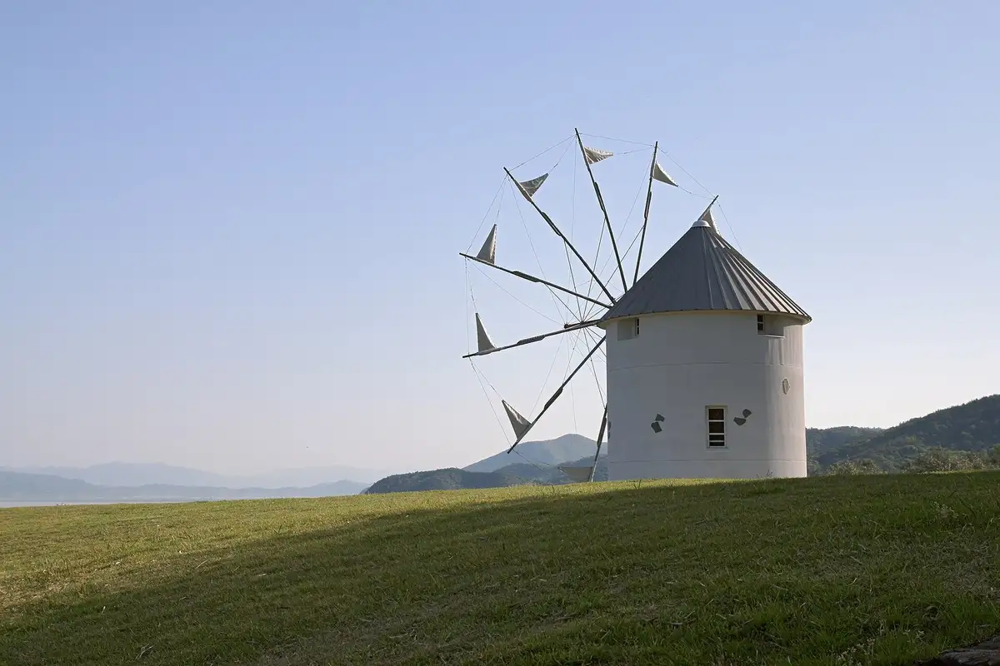
Stay
海音真里
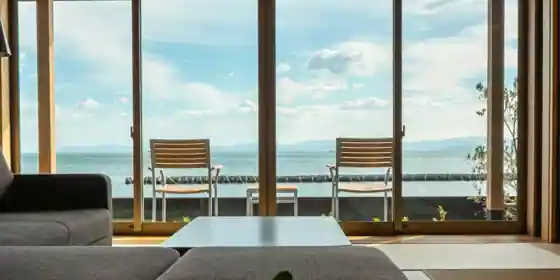
Kaion Mari
味わう、もろみの島宿。 「真里」
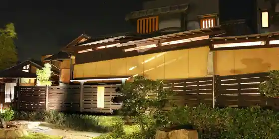
Ajiwa U, Moromino Shima Yado. (Mari)
お屋敷ステイ 幸
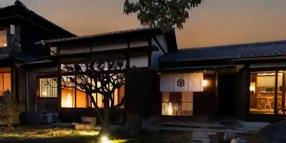
O Yashiki Sutei Sachi
SHIMASTREAM house
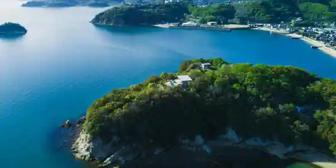
SHIMASTREAM house
edit x seven 瀬戸内小豆島
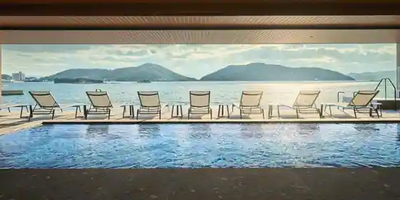
edit x seven Setochi Shozushima
ベイリゾートホテル小豆島
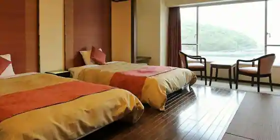
Bei Resort Hotel Shozushima
Resort hotel in Furueotsu, Shodoshima with open-air baths and private baths.
島宿真里
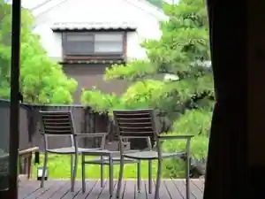
Shima Yado Mari
Inn in Naehanekabuto, Shodoshima with kaiseki dinners.
小豆島オリーブユースホステル
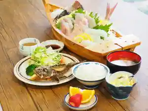
Shozushima Oribuyusuhosuteru
星ノソラ
Hoshi Nosora
ペンション バァン キャトル・ウ
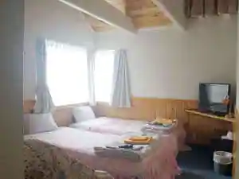
Pension Ban Kyatoru U
森口屋アートスクエア
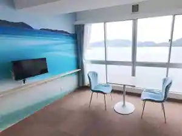
Moriguchi Ya Atosukuea
プライベートヴィラ渚音
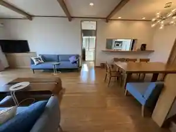
Puraibeto Villa Nagisa Oto
Dining
なかぶ庵
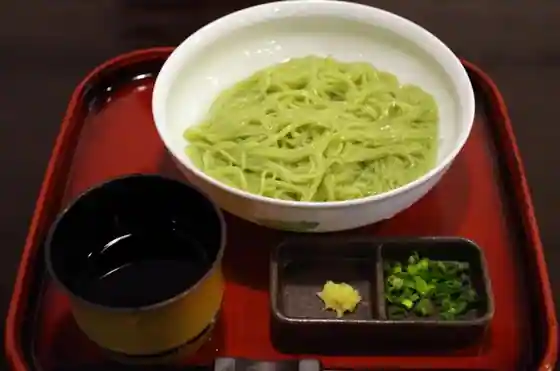
Nakabu Iori
こまめ食堂
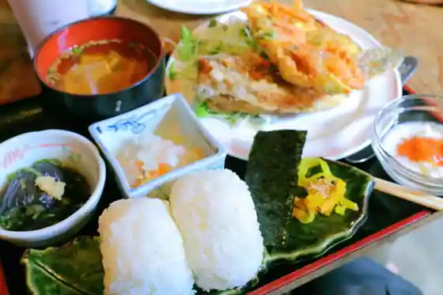
Komame Shokudo
ミノリ ジェラート
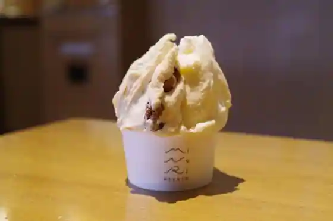
Minori Jierato
モリクニ カフェ＆バー
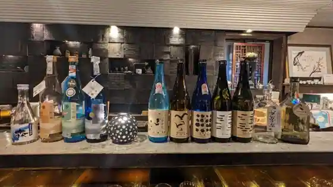
Morikuni Cafe & Bar
井上誠耕園 ファームズテーブル 忠左衛門
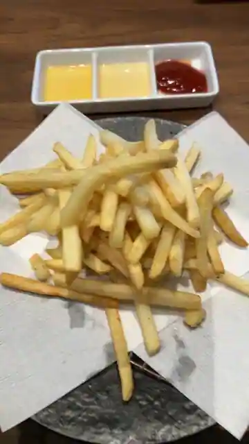
Inoe Makoto Ko Sono Famuzuteburu Chuzaemon
三太郎
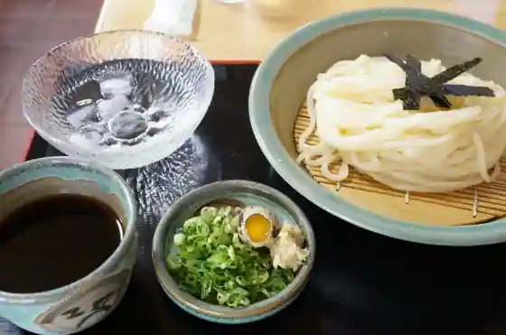
Santaro
モリクニベーカリー
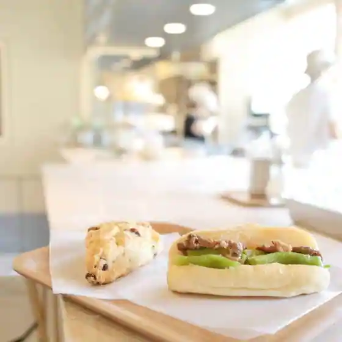
Morikuni Bakery
食事処うめもと
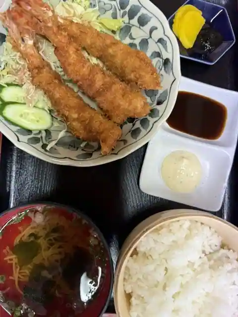
Shokuji Tokoro Umemoto
ヤマロク茶屋
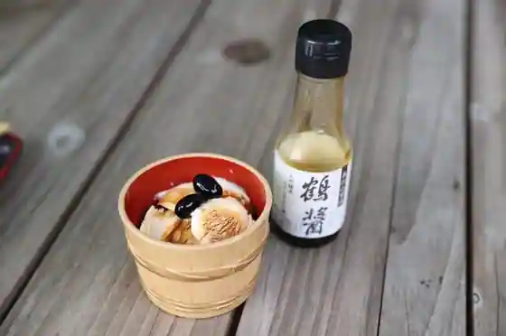
Yamaroku Chaya
オリーブパレス レストレア
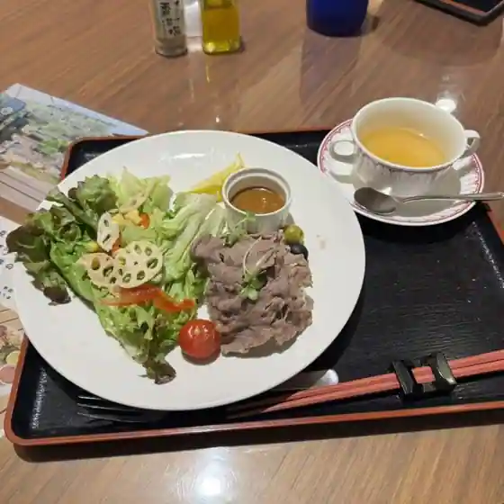
Oribuparesu Resutorea
作兵衛
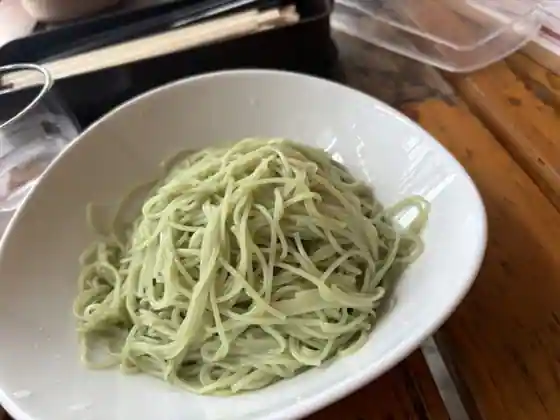
Sakube
寒霞渓山頂駅 売店
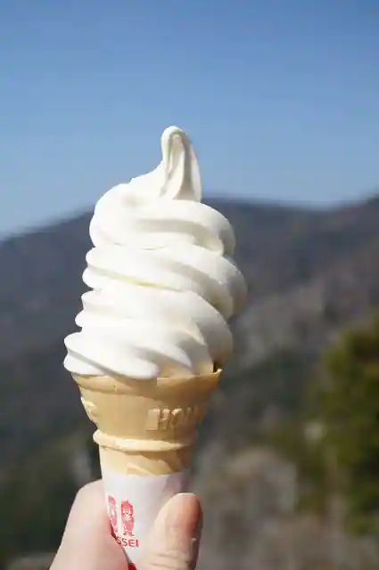
Kanka Keizan Itadaki Eki Bai
瀬戸よ志 お休み処
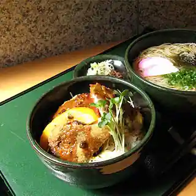
Seto Yo Kokorozashi O Yasumi Tokoro
野の花
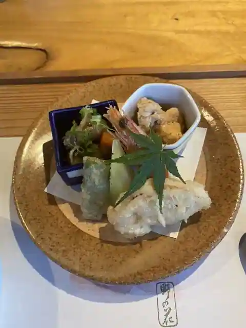
No No Hana
Cafe シネマ倶楽部
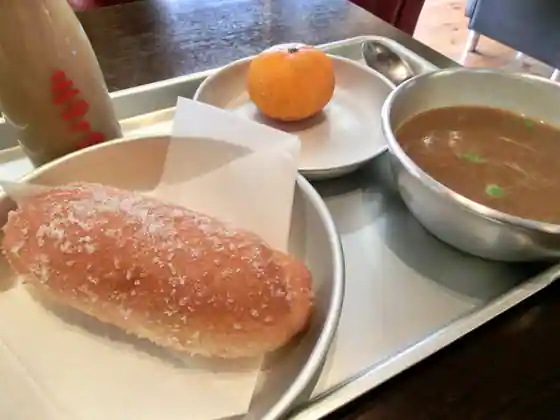
Cafe Shinema Kurabu
小豆島オリーブ園
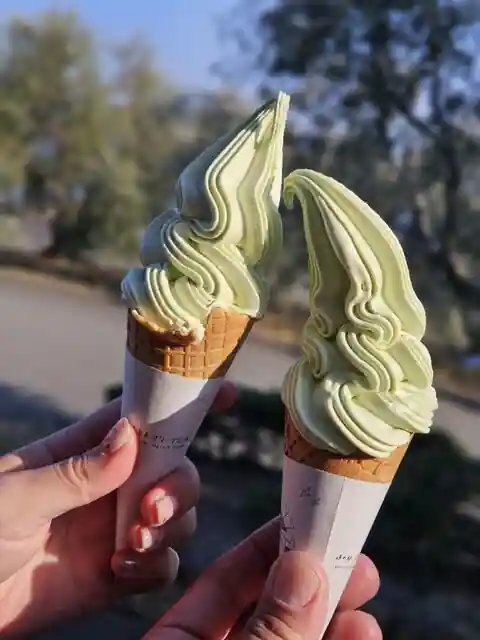
Shozushima Oribu Sono
手延そうめん館
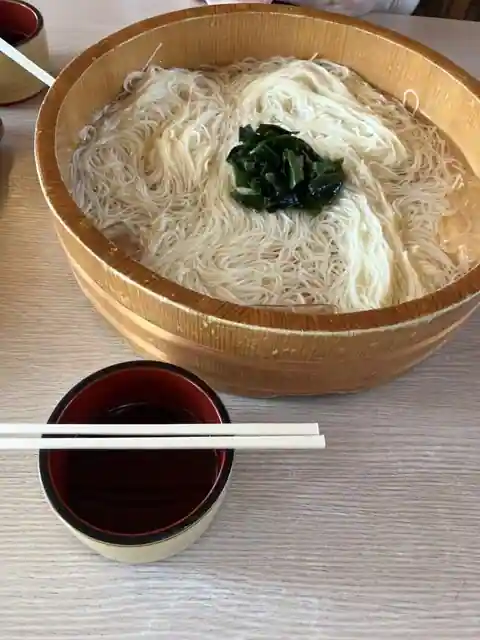
Te Nobaso Umen Kan
カフェレスト サクラヰ
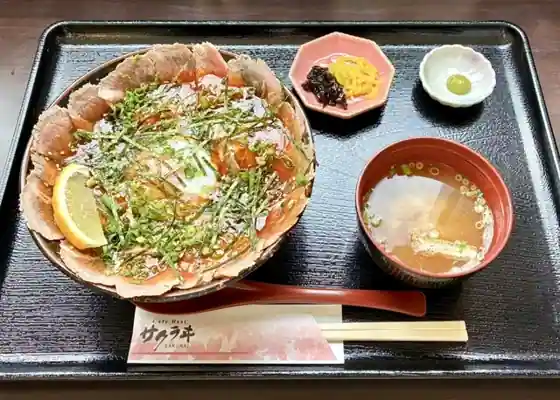
Cafe Resuto Sakurai
道の駅 小豆島オリーブ公園
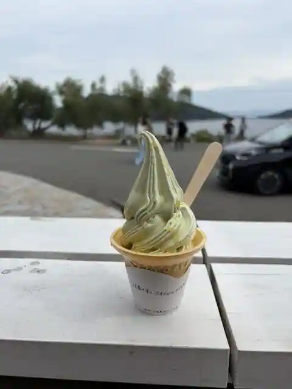
Michi No Eki Shozushima Oribu Koen
一徳庵
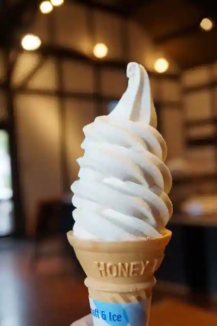
Motonori Iori
小豆島ふるさと村 ふるさと物産館
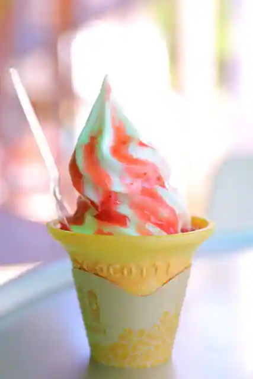
Shozushima Furusato Mura Furusato Bussan Kan
Sights
Roadside Station Shodoshima Oriibu Park
Kanka Kei
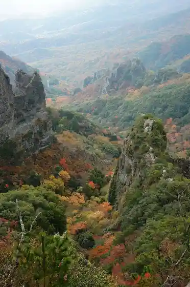
Nijushi no Hitomi Eiga Village
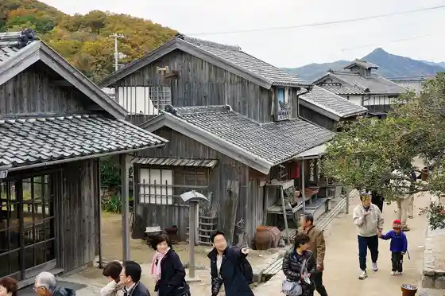
Marukin Shoyu Memorial Museum
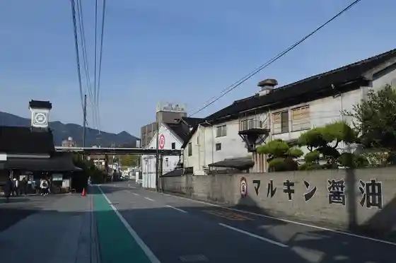
Kusakabe Minato
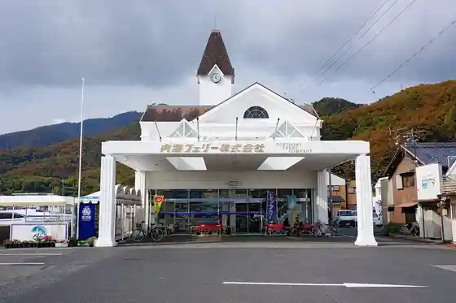
Fukuda Minato